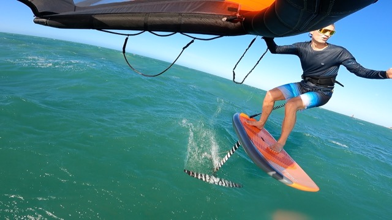
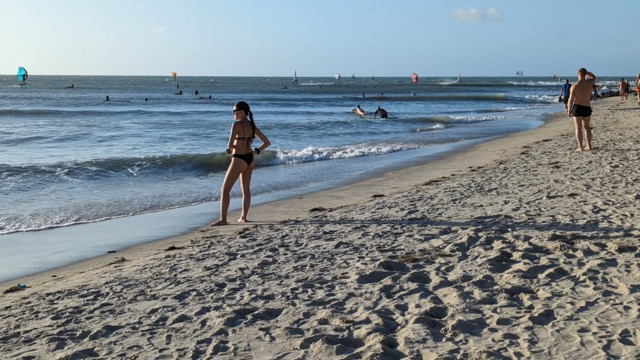
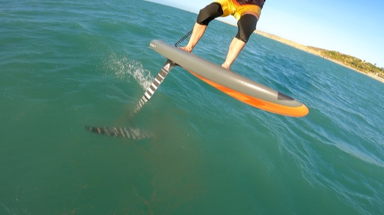
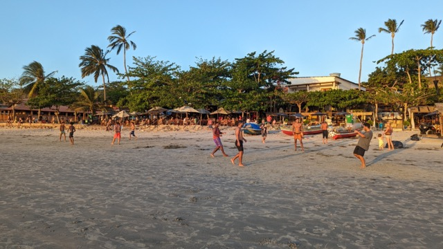
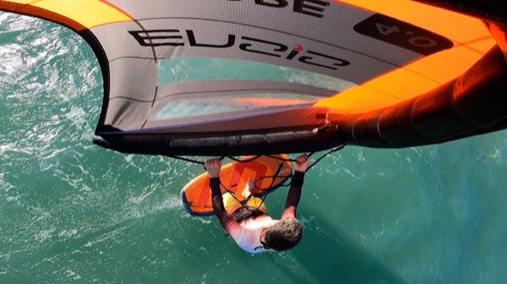
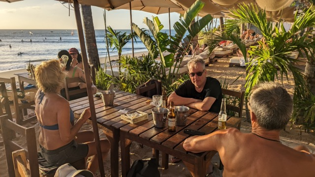

Jericocara - My favorite watersport destination
Jijoca de Jericoacoara is the northernmost municipality in the Brazilian state of Ceará, near the city of Cruz. It is known for its eponymous beach and national park. It is served by Jericoacoara airport, which opened in 2017.

Me on the water

Beach with view towards the surf area.

Foil and board close up

View from the beach towards the village

Wing foil from above

Beach bar at Club Ventos